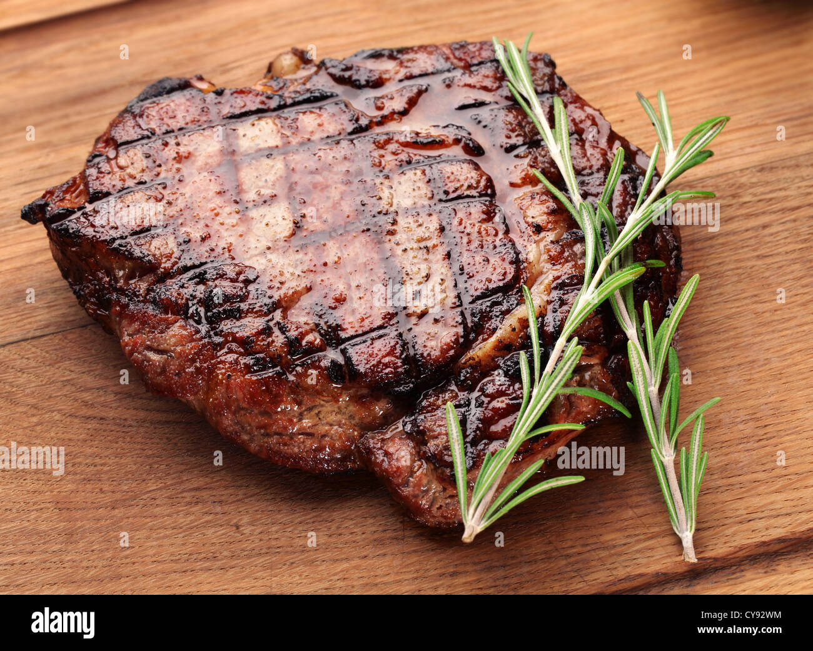

Grilled Steak

Dayton's Not So Famous Grilled Steak Recipe!
Unlike my cookie recipe, the grilled steak recipe is quite simple and hard to mess up. Add in some greens to this meal to make it come out the other end easier1 ;)
Ingredients
- Sirloin steak
- Salt
- Pepper
- Garlic Powder
- Butter
Steps
- Turn on grill to medium-high heat
- Season Steak with Salt, Peppper, and Garlic powder to your liking
- Toss on the grill
- Put a smidge of butter on top and close the grill lid
- Close grill top/lid and let sit for 3-5 min
- Rotate steak to to allow even cooking and let sit for another 3-5 min
- Flip Steak and repeat steps 5 and 6
- Once desired color is aquired let pull the steak off the grill and let sit for 2-3 min
- Enjoy!